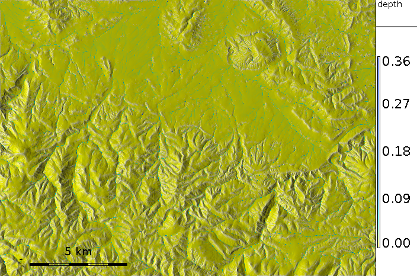
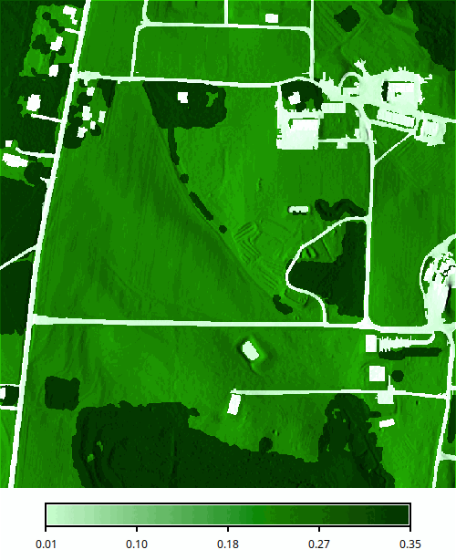
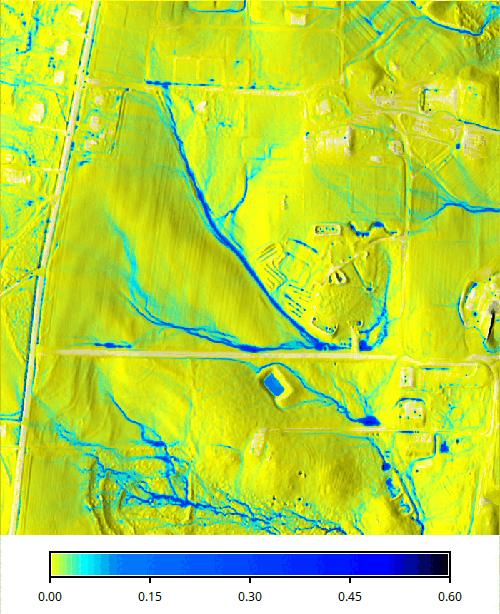
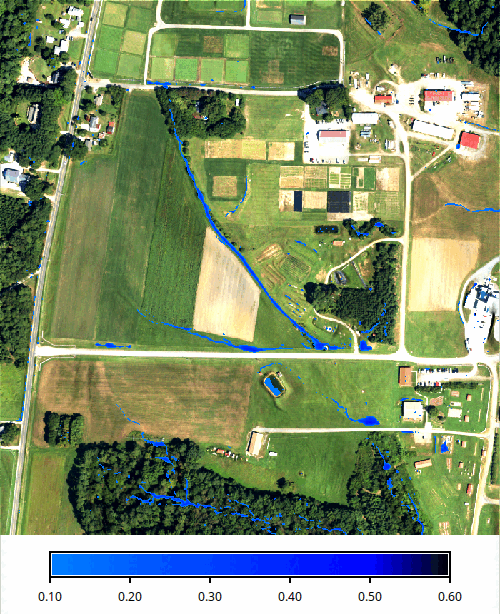

dx = tan(slope) * cos(aspect)
dy = tan(slope) * sin(aspect)

The module automatically converts horizontal distances from feet to metric system using database/projection information. The module requires a projected coordinate system and does not run in a latitude-longitude project. Rainfall excess is defined as rainfall intensity - infiltration rate and should be provided in [mm/hr]. Rainfall intensities are usually available from meteorological stations. Infiltration rate depends on soil properties and land cover. It varies in space and time. For saturated soil and steady-state water flow it can be estimated using saturated hydraulic conductivity rates based on field measurements or using reference values which can be found in literature. Optionally, user can provide an overland flow infiltration rate map infil or a single value infil_value in [mm/hr] that control the rate of infiltration for the already flowing water, effectively reducing the flow depth and discharge. Overland flow can be further controlled by permeable check dams or similar types of structures. The user can provide a map of these structures as flow_control with values 0-1 that give the probability of a particle being trapped by the structure at each time step. A trapped particle is moved slightly back instead of forward, so a higher value means lower permeability, holding back more water and increasing the flow depth at the structure.
Output includes a water depth raster map depth in [m], and a water discharge raster map discharge in [m3/s]. The error raster map is a Monte Carlo standard-deviation estimator across replicas of the particle simulation; the simulation currently runs a single replica, so this map is zero everywhere and is provided for forward compatibility with planned multiple-replica execution. The output vector points map output_walkers can be used to analyze and visualize spatial distribution of walkers at different simulation times (note that the resulting water depth is based on the density of these walkers). Duration of simulation is controlled by the duration parameter. The default value is 10 minutes, reaching the steady-state may require much longer time, depending on the time step, complexity of terrain, land cover and size of the area. Output walker, water depth and discharge maps can be saved during simulation using the time series flag -t and output_step parameter defining the time step in minutes for writing output files. Files are saved with a suffix representing time since the start of simulation in minutes (e.g. wdepth.05, wdepth.10) and are timestamped with that time. The simulation advances in time steps which usually do not fall exactly on the output times. A map holds the state at the time step closest to the time in its name, so at most half a time step earlier or later. When the time step is longer than output_step, there are fewer time steps than output times, and a time step writes only the maps for the output time closest to it. The series always ends with maps named by the duration which hold the state at the end of the run, also when the duration is not a multiple of output_step or when the simulation stopped early. Monitoring of water depth at specific points is supported. A vector map with observation points and a path to a logfile must be provided. For each point in the vector map which is located in the computational region the water depth is logged each time step in the logfile. The logfile is organized as a table. A single header identifies the category number of the logged vector points. In case of invalid water depth data the value -1 is used.
Overland flow is routed based on partial derivatives of elevation field or other landscape features influencing water flow. Simulation equations include a diffusion term (diffusion_coeff parameter) which enables water flow to overcome elevation depressions or obstacles when water depth exceeds a threshold water depth value (hmax), given in [m]. When it is reached, diffusion term increases as given by halpha and advection term (direction of flow) is given as "prevailing" direction of flow computed as average of flow directions from the previous hbeta number of grid cells. The model tries to keep water "shallow" with maximum shallow water depth defined by hmax default 0.3 meters. However, water depths much higher than hmax can be observed if water accumulates in natural sinks or river beds. Depending on the area of interest and the used digital elevation model, hmax, halpha and hbeta might need to be adjusted in order to deal realistically with elevation depressions or obstacles.
Green's function stochastic method of solution.
The Saint Venant equations are solved by a stochastic method called Monte Carlo
(very similar to Monte Carlo methods in computational fluid dynamics or to
quantum Monte Carlo approaches for solving the Schrodinger equation (Schmidt
and Ceperley, 1992, Hammond et al., 1994; Mitas, 1996)). It is assumed
that these equations are a representation of stochastic processes with
diffusion and drift components (Fokker-Planck equations).
The Monte Carlo technique has several unique advantages which are becoming even more important due to new developments in computer technology. Perhaps one of the most significant Monte Carlo properties is robustness which enables us to solve the equations for complex cases, such as discontinuities in the coefficients of differential operators (in our case, abrupt slope or cover changes, etc). Also, rough solutions can be estimated rather quickly, which allows us to carry out preliminary quantitative studies or to rapidly extract qualitative trends by parameter scans. In addition, the stochastic methods are tailored to the new generation of computers as they provide scalability from a single workstation to large parallel machines due to the independence of sampling points. Therefore, the methods are useful both for everyday exploratory work using a desktop computer and for large, cutting-edge applications using high performance computing.
Null cells in the elevation, dx, dy, rain and man raster maps are excluded from the simulation, the outputs are null there, and walkers that reach them leave the area. Null cells in the infil raster map mean no infiltration.
g.extension extension=r.manning r.manning input=nlcd_landcover output=mannings_n landcover=nlcd
For the shallow overland flow simulated here, Manning's n is generally higher than for deeper channel or floodplain flow, especially over vegetated surfaces, see the r.manning documentation.
key: value pair per line) or JSON. Without -p, nothing is
printed to standard output regardless of format. The values are also
stored in the history of the output raster maps under the same keys (see
r.info).
| Key | Meaning | Unit |
|---|---|---|
walkers_requested | Number of walkers from nwalkers, by default twice the number of cells | count |
walkers_generated | Walkers created, at least one per cell and more where the source rate is higher | count |
walkers_remaining | Walkers still in the domain at the end of the run | count |
duration | Requested simulation length (duration) | s |
simulated_time | Simulated time reached at the end of the run | s |
time_step | Simulated time per iteration | s |
iterations_planned | Iterations needed to cover duration | count |
iterations_completed | Iterations run, fewer than planned when the run stopped early | count |
stopped_early | true when all walkers left the domain before duration was reached | |
mean_velocity | Mean flow velocity over the defined cells | m/s |
mean_mannings_n | Harmonic mean of Manning's n over the defined cells (the inverse of the mean of 1/n), null when undefined | |
mean_source_rate | Mean rainfall excess | m/s |
mean_infiltration | Mean infiltration rate, 0 without infiltration input | m/s |
threads | Threads used for the computation | count |
outputs | One entry per set of written maps: with -t, one per written output step, the last one named by duration, otherwise a single entry |
Each entry of outputs contains the simulated_time (s) when the maps
were written, their timestamp, the number of walkers_remaining at that time, and
the names of the depth, discharge, error and walkers maps, or
null for maps which were not requested.
Summary of a time series run with two output steps in JSON:
r.sim.water elevation=elevation depth=depth discharge=discharge rain_value=50 \
man_value=0.05 nwalkers=100000 duration=20 output_step=10 random_seed=3 \
-t -p format=json
import grass.script as gs
summary = gs.parse_command(
"r.sim.water",
elevation="elevation",
depth="depth",
discharge="discharge",
rain_value=50,
man_value=0.05,
nwalkers=100000,
duration=20,
output_step=10,
random_seed=3,
flags="tp",
format="json",
)
print(summary["walkers_remaining"], summary["outputs"][-1]["depth"])
from grass.tools import Tools
tools = Tools()
summary = tools.r_sim_water(
elevation="elevation",
depth="depth",
discharge="discharge",
rain_value=50,
man_value=0.05,
nwalkers=100000,
duration=20,
output_step=10,
random_seed=3,
flags="tp",
format="json",
)
print(summary["walkers_remaining"], summary["outputs"][-1]["depth"])
{
"walkers_requested": 100000,
"walkers_generated": 120000,
"walkers_remaining": 112724,
"duration": 1200,
"simulated_time": 1199.2085202681737,
"time_step": 1.0631281208051186,
"iterations_planned": 1128,
"iterations_completed": 1128,
"stopped_early": false,
"mean_velocity": 9.4062040165270862,
"mean_mannings_n": 0.050000000000000003,
"mean_source_rate": 1.390000000000819e-05,
"mean_infiltration": 0,
"threads": 1,
"outputs": [
{
"simulated_time": 599.60426013408687,
"timestamp": "10 minutes",
"walkers_remaining": 113464,
"depth": "depth.10",
"discharge": "discharge.10",
"error": null,
"walkers": null
},
{
"simulated_time": 1199.2085202681737,
"timestamp": "20 minutes",
"walkers_remaining": 112724,
"depth": "depth.20",
"discharge": "discharge.20",
"error": null,
"walkers": null
}
]
}
Set the computational region to the elevation map and derive the Manning's n raster map from the land cover classes with r.recode. Buildings (class 1), paved roads (2) and compacted roads and parking lots (3) get low roughness values, while herbaceous cover such as fields and lawns (4) and forest (5) get high values suitable for shallow overland flow. Water (6) gets a low value. See the r.manning addon for an explanation of Manning's n and reference values for common land cover classifications.
g.region raster=elevation r.recode input=landcover output=mannings rules=- <<EOF 1:1:0.012 2:2:0.014 3:3:0.025 4:4:0.24 5:5:0.35 6:6:0.04 EOF
import grass.script as gs
gs.run_command("g.region", raster="elevation")
manning = {
1: 0.012, # buildings
2: 0.014, # paved roads
3: 0.025, # compacted roads and parking lots
4: 0.24, # herbaceous cover
5: 0.35, # forest
6: 0.04, # water
}
rules = "\n".join(f"{k}:{k}:{v}" for k, v in manning.items())
gs.write_command(
"r.recode", input="landcover", output="mannings", rules="-", stdin=rules
)
from io import StringIO
from grass.tools import Tools
tools = Tools()
tools.g_region(raster="elevation")
manning = {
1: 0.012, # buildings
2: 0.014, # paved roads
3: 0.025, # compacted roads and parking lots
4: 0.24, # herbaceous cover
5: 0.35, # forest
6: 0.04, # water
}
rules = "\n".join(f"{k}:{k}:{v}" for k, v in manning.items())
tools.r_recode(input="landcover", output="mannings", rules=StringIO(rules))

Simulate 30 minutes of overland flow with a uniform rainfall excess of 20 mm/hr. The random seed makes the run reproducible.
r.sim.water elevation=elevation man=mannings rain_value=20 depth=depth \
duration=30 random_seed=1
gs.run_command(
"r.sim.water",
elevation="elevation",
man="mannings",
rain_value=20,
depth="depth",
duration=30,
random_seed=1,
)
tools.r_sim_water(
elevation="elevation",
man="mannings",
rain_value=20,
depth="depth",
duration=30,
random_seed=1,
)


Jaroslav Hofierka
GeoModel, s.r.o. Bratislava, Slovakia
hofierka@geomodel.sk
Chris Thaxton
North Carolina State University
csthaxto@unity.ncsu.edu